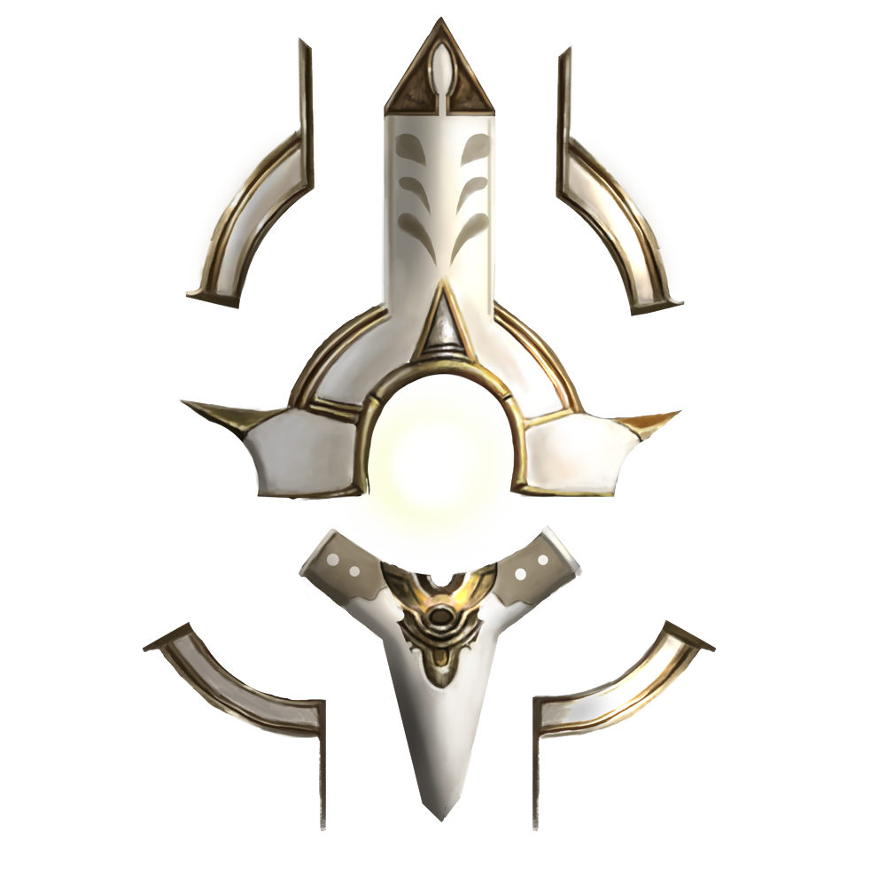

|
|||
|---|---|---|---|
PROTECTOR OF AEGIS |
|||
|  | 
| 
| 
|
REALM |
TYPE |
CLASS |
|
Zuria |
Ranged |
Physical |
Marksman |
Region |
|||
Aegis |
|||
Gusts and rain pummeled the metropolis of Zuria. Continuous storms battered Aegis
since the king fell mysteriously ill and the heir to the throne went missing. Chaos spread
like wildfire through the boroughs, as the shiny facade of progress and order collapsed;
corrupt bureaucrats and crime syndicates seized control of the Region and the politics.
Lightning shot across dark skies, atop a tall building, a hooded figure guarded the
semi-deserted streets, their features unidentifiable among the surrounded darkness. A
series of thundering cracked over the buildings as a dense curtain of water suddenly
burst from the sky. Perched on the cornice, Dante wasn't disturbed by the increased
gusts of icy wind that accompanied the flood.
Commotion drew Dante to a nearby alley, a group of six wary men gathered outside the
doors of an abandoned warehouse. Deadly guns hung on their waist side, rumors of a
shadow nightwalker taking law into their own hands materialized every morning, as
executed criminals and politicians appeared on display.
Dante, the successor to rule Zuria's most advanced Region, contemplated his
predicament as he dropped down the emergency stairs. Malacod would be aghast if he
learned that his only son, one without children and only descendant to his legendary
lineage risked his life every night, ironically, correcting the corruption network woven
under his own reign. Such was Dante’s fate.
Dante drew his right hand to one transmutor holstered on his utility belt; all six men who
entered the warehouse failed to draw their weapons by the time they spotted Dante.
When the ruckus passed, only Dante remained standing by Gliont, Aegis' Minister of
commerce, who glanced upwards in horror as Dante reloaded his gun and leveled it just
as thunder cracked the darkness.
My kingdom, my rules.
OFFICIAL ART

RELATED MYTHS